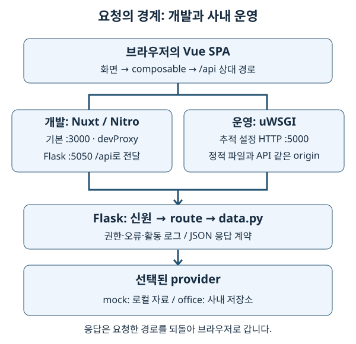
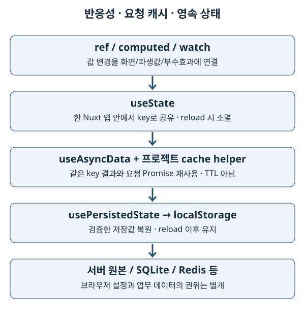
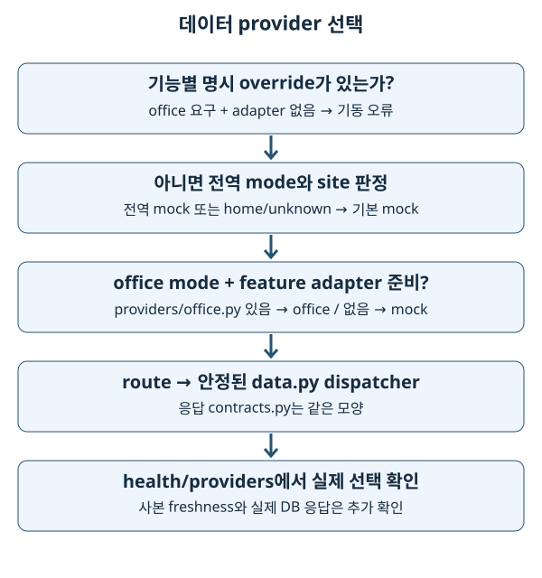

SKEWNONO 구현을 설명하는 한국어 학습 공간
구현 기준일: 2026-10-03. 기술 이름을 외우는 대신 ‘어느 코드가 어느 상태를 바꾸고, 요청이 어디로 가며, 변경을 어떻게 확인하는가’를 설명하는 것이 목표입니다. 기존 01~13과 보조 학습 주제를 유지하고 실행·운영·저장소 설명을 추가했습니다.
1. 기초 개념과 읽는 방법
이 시스템은 계측 장비의 데이터와 분석을 보여주는 웹 애플리케이션입니다. 브라우저의 Vue 화면, 개발·빌드 때 쓰는 Node 환경, 실제 API를 처리하는 Python/Flask, 사내 데이터 저장소가 서로 다른 책임을 가집니다. 먼저 아래 요청 그림에서 각 상자가 실행되는 위치를 말해 본 뒤 개별 장으로 들어갑니다.

HTML(Hypertext Markup Language)은 문서 구조를 표현하는 형식이며, CSS(Cascading Style Sheets)는 표시 스타일을 정합니다. HTML 최종 열람 형태는 오프라인 학습 홈입니다. 이 Markdown과 각 장의 Markdown은 수정 가능한 원본입니다. HTML은 각 원본의 같은 basename으로 생성되며 예를 들어 03-nuxt/README.md의 대응 파일은 03-nuxt/README.html입니다. 브라우저에서 index.html을 직접 열면 됩니다. docs/study 전체를 복사하면 본문·목차·그림이 오프라인에서도 작동합니다. 저장소 코드 링크는 저장소 전체가 있을 때 열 수 있고 외부 공식 문서 링크는 온라인 참고용입니다.
사실·개념·미확인을 구분합니다
- 구현 사실: 실제 추적 파일·설정·테스트 또는 이번 로컬 버전 확인으로 뒷받침합니다. 코드 링크가 근거입니다.
- 일반 개념: 프레임워크 공식 문서와 작은 예제로 설명합니다. 작은 교육 예제는 그대로 존재하는 runtime 코드와 구분합니다.
- 미확인 / OFFICE-VERIFY: 사내 DB schema·active adapter·운영 설정·네트워크·권한처럼 집에서 입증하지 못한 내용입니다. template의 의도를 운영 검증 결과로 바꾸어 적지 않습니다.
SPA (Single Page Application)는 브라우저가 라우팅과 화면 구성을 맡는 앱입니다. SSR (Server-Side Rendering)은 서버가 화면 HTML을 렌더링하는 방식이며 이 저장소는 ssr: false입니다. API (Application Programming Interface)는 프로그램 간 입출력 약속입니다. 이후 약어는 각 장의 용어 설명에서 확인할 수 있습니다.
2. 버전을 읽는 법과 확인 결과
frontend/package.json은 허용 범위, frontend/package-lock.json은 선택된 버전입니다. ^4.4.2는 ‘반드시 4.4.2 설치’가 아닙니다. 아래 lock 버전과 원래 checkout의 실제 node_modules 버전은 이번 확인에서 같았습니다. 사내 설치 버전은 미확인입니다.
| 프런트엔드 패키지 | 선언 범위 | 잠금 파일 | 로컬 설치 확인 |
|---|---|---|---|
| Nuxt | ^4.4.2 |
4.5.0 | 4.5.0 |
| Vue | Nuxt의 전이 의존성 | 3.5.40 | 3.5.40 |
| Nuxt UI | ^4.6.1 |
4.10.0 | 4.10.0 |
| Tailwind CSS | ^4.1.18 |
4.3.3 | 4.3.3 |
| TypeScript | ^5.9.3 |
5.9.3 | 5.9.3 |
| Vite | Nuxt의 전이 의존성 | 8.1.5 | 8.1.5 |
Nitro (nitropack) |
Nuxt의 전이 의존성 | 2.13.4 | 2.13.4 |
| ESLint | ^9.39.2 |
9.39.5 | 9.39.5 |
@nuxt/eslint |
^1.13.0 |
1.16.0 | 1.16.0 |
| ECharts | ^6.1.0 |
6.1.0 | 6.1.0 |
| ExcelJS | ^4.4.0 |
4.4.0 | 4.4.0 |
Python의 선언과 실제 설치는 다음과 같이 구분합니다.
| 백엔드 패키지 | requirements.txt 선언 | 로컬 .venv 확인 |
|---|---|---|
| Flask | >=3.0 |
3.1.3 |
| NumPy | >=2 |
2.4.6 |
| pandas | >=2.2.2 |
3.0.5 |
| PyArrow | >=16 |
25.0.1 |
| APScheduler | >=3.10 |
3.11.3 |
Python 잠금 파일은 발견되지 않았습니다. 따라서 위 값은 로컬 관측값이고 모든 설치의 고정 버전은 아닙니다. 전체 backend 선언에는 Redis·MinIO·OpenSearch·Pillow·HTTP 클라이언트·사내 RAG 의존성도 있습니다. 사용 여부와 역할은 16장에 연결했습니다.
실행 환경은 로컬 CPython 3.11.14, Node 24.13.0을 확인했습니다. packageManager 선언은 npm@11.9.0이고, 선택한 Node 24 환경에서 실제 npm은 11.19.1입니다. CI는 Node 24, Python 3.14를 사용합니다. CI 통과를 사무실 Python 3.11 검증과 같은 것으로 해석하지 않습니다. 공식 문서는 버전 계열을 확인하고 사용했으며, rolling 문서의 patch 설명은 설치 소스와 함께 확인해야 합니다.
3. 학습 순서와 장별 지도
처음에는 14장의 요청 흐름을 훑고 01→02→03→07→10을 읽습니다. 이 순서가 ‘타입 → 화면 상태 → 앱 구조 → 상태 수명 → 데이터 경계’를 연결합니다. 이후 UI·차트·통계·검증을 익히고 15→16으로 운영까지 확장합니다. Python 개발자는 10→14에서 시작해도 됩니다.
| 장 | 설명할 수 있게 되는 질문 | 원본 |
|---|---|---|
| 01 TypeScript | 컴파일 때 확인하는 타입과 실제 HTTP 값이 왜 다른가? | 기본 · 타입 관리 · 빈 값 |
| 02 Vue 반응성 | 값 변경이 어떻게 화면과 파생값으로 이어지는가? | 02 |
| 03 Nuxt SPA | 파일 route·오토임포트·요청 상태와 캐시의 범위는 무엇인가? | 03 |
| 04 Nuxt UI | 컴포넌트 API·slot·접근성을 어떻게 조합하는가? | 04 |
| 05 Tailwind·토큰 | 레이아웃 utility와 의미 색상 토큰은 어떻게 나뉘는가? | 05 |
| 06 Vite·Nitro·설정 | 개발 프록시와 정적 빌드는 왜 다른가? | 06 |
| 07 코드 패턴 | 반응성·공유·캐시·영속성은 각각 언제 끝나는가? | 기본 · 장비 목록 캐시 · 영속 상태 |
| 08 ESLint | lint·타입 검사·실행 테스트는 무엇을 각각 잡는가? | 08 |
| 09 UI 용어 | 화면 개념과 사용자 문구를 어떻게 구분하는가? | 09 |
| 10 Flask·provider | 환경 mode와 adapter 준비 상태가 어떻게 합쳐지는가? | 10 |
| 11 ECharts | 명령형 차트 API를 Vue lifecycle에 어떻게 잇는가? | 11 |
| 12 통계·좌표 | 중심·산포·기준값·실제 좌표를 어떻게 구분하는가? | 12 |
| 13 테스트 경계 | 순수 함수·contract·browser·office 검증의 범위는 어디까지인가? | 13 |
| 14 실행·HTTP | 브라우저부터 WSGI까지 한 요청을 설명할 수 있는가? | 14 |
| 15 프로세스·신원·운영 | 어떤 프로세스가 작업을 실행하며 권한·로그를 어떻게 남기는가? | 15 |
| 16 저장소·사내 배포 | 데이터 형식과 배포 파일의 수명은 어떻게 다른가? | 16 |
4. 구현 선택을 연결해서 읽습니다

반응성이 있다는 말은 재로드 뒤에도 값이 남는다는 뜻이 아닙니다. useState는 현재 앱의 공유 상태, useAsyncData와 cache helper는 읽기 결과·요청의 재사용, usePersistedState는 검증한 localStorage 복원입니다. Pinia·TanStack Query가 없다는 사실도 실제 선택이며 새 추상화를 먼저 넣을 이유는 아닙니다. 구체적인 보존·갱신 한계는 07장에 있습니다.

기능의 응답 shape를 바꾸면 Python contracts·mock·office·frontend 타입·차트·테스트까지 영향이 이어집니다. 연결 호스트만 바꾸면 provider 설정 경계에 한정될 수 있습니다. ‘어디를 고칠까’에 답하기 전에 실제 호출 경로를 읽고 변경 범위를 정합니다.
5. 흔한 실수와 학습의 한계
- 문서나 주석의 예전 숫자를 현재 구현이라고 외우지 않습니다. 버전·파일 존재·테스트·명령을 다시 확인합니다.
- mock가 반환하는 예쁜 값은 사내 데이터 분포·결측·상관관계의 증거가 아닙니다.
- 타입 검사와 unit test 통과는 browser lifecycle이나 실제 저장소 연결을 입증하지 않습니다.
- 예제를 복사하면서 사내 secret·token·원본 계측 자료를 공개 문서에 넣지 않습니다.
- 프레임워크의 일반 동작과 이 저장소의 추가 helper 정책은 구분해서 읽습니다.
6. 안전한 학습과 확인
각 장의 실습은 읽기 전용 코드 추적, 작은 로컬 예제, 이미 준비된 mock 환경의 검사로 구성합니다. 사내 배포·삭제·동기화 명령은 실행 안내와 home 실습을 구분합니다. 명령은 특별한 표시가 없으면 저장소 루트에서 실행하고, npm run … 프런트엔드 명령은 frontend에서 실행합니다.
질문 문서에 ‘예상한 흐름 → 실제로 읽은 파일 → 관측 결과 → 아직 모르는 점’을 기록합니다. 기존 Q1·Q2를 보존하고 현재 답을 연결했습니다. 자동 답변 스케줄의 현재 실행 여부는 확인되지 않았으므로 파일을 작성하면 자동 답이 생긴다고 약속하지 않습니다.
검증 기록은 코드 대조, 초심자 점검, 링크·lint·실제 브라우저 검증을 구분합니다. 각 장을 읽은 뒤 표의 질문에 파일을 가리키며 답할 수 있다면 다음 장으로 넘어갑니다.
HTML을 다시 생성합니다
설치된 root Markdown lint tooling의 markdown-it를 재사용합니다. 추가 패키지·CDN (Content Delivery Network)·웹폰트·원격 스크립트가 필요하지 않습니다. 저장소 루트에서 실행하며 출력은 docs/study의 HTML만 갱신합니다.
node docs/study/build-html.mjs
node docs/study/check-site.mjs
npm run lint:md
먼저 node --version이 v24 계열인지 확인합니다. 이번 머신의 기본 Homebrew Node 25는 공유 라이브러리 libllhttp.9.3.dylib가 없어 기동하지 못했습니다. 검사에는 별도로 설치된 NVM(Node Version Manager)의 Node 24.13.0을 PATH 맨 앞에 두었습니다. 이것은 실행 환경 선택이며 저장소 의존성 변경이 아닙니다. 개인 환경에 맞게 Node 24 실행 파일을 선택한 뒤 위 명령을 사용합니다.
HTML은 별도로 내용 편집하지 않습니다. Markdown을 고친 뒤 재생성하면 heading·표·code·그림·링크가 같은 본문에서 만들어집니다. 각 HTML의 source hash와 check-site.mjs가 원본 일치와 로컬 링크를 검사합니다.
주요 근거
- CLAUDE.md, Nuxt 설정, Flask factory, requirements, 배포 문서
- 각 장의 ‘근거와 공식 문서’에는 해당 버전 계열의 동작 확인 링크가 있습니다. 외부 자료는 설명 근거이며 사이트가 로드할 실행 의존성이 아닙니다.
최초 학습 공간 생성: 2026-04-16. 기존 문법 예제와 학습 질문을 이어서 보존한 전체 구현 대조: 2026-10-03.